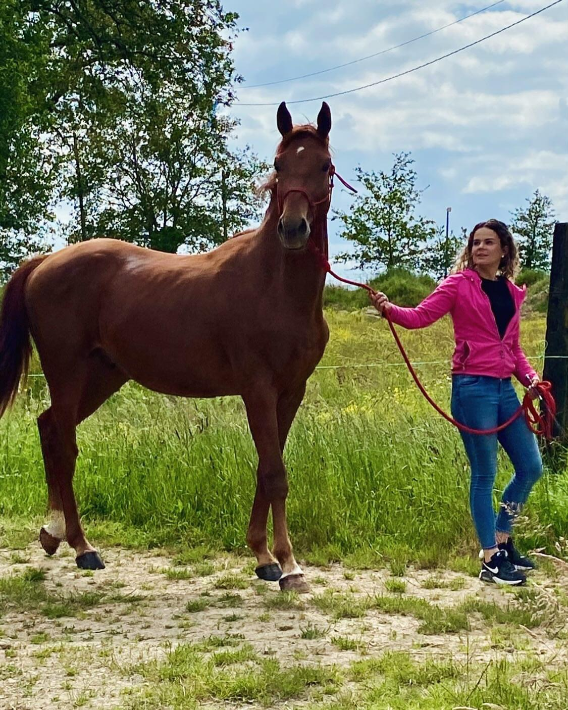

Le 20 juin prochain, tous les regards se tourneront vers Méphisto des Vignes, un poulain prometteur de deux ans, qui participera à l'entraînement des mâles de 2 ans au concours d'élevage organisé par le Groupe France Élevage (GFE) à la Roche sur Yon. Cette compétition, dédiée à l'approbation des étalons Selle Français, représente une étape cruciale pour les jeunes chevaux aspirant à une carrière d'exception. Méphisto des Vignes, issu d'une lignée réputée, fera ses débuts dans ce concours avec deux épreuves déterminantes. La première épreuve évaluera ses allures, où il devra démontrer son élégance, son équilibre et la qualité de ses mouvements. Cette étape est essentielle pour juger du potentiel athlétique et de la grâce naturelle du jeune étalon. La seconde épreuve mettra en avant ses capacités en saut en liberté. Cette discipline exigeante permettra d'apprécier non seulement la puissance et la technique de saut de Méphisto des Vignes, mais aussi son intelligence et son aptitude à surmonter des obstacles sans cavalier.
Lors du concours du 05/05/24 au Poney Club de Pied Bercy, notre écurie a brillé malgré quelques rebondissements. Dans l'épreuve Club 2, nous avons vu Pauline subir une chute malheureuse de sa jument Upsy Daisy. Cependant, dans l'épreuve Club 1, le retour d'Hélène sur le circuit après deux ans d'absence s'est avéré triomphant. Accompagnée de sa remarquable jument Aiwel, elle a conquis la première place, témoignant ainsi de son talent indéniable. Gabrielle a également offert une performance remarquable en se classant deuxième avec son fidèle compagnon, Kermoroc'h. Enfin, Anais a ajouté à notre fierté en décrochant la quatrième place avec Hiesta des Vignes, une jument issue de notre propre élevage. Ces résultats illustrent non seulement la qualité de nos cavaliers et de nos chevaux, mais aussi l'esprit d'équipe et la détermination qui caractérisent notre écurie.

Nous sommes ravis de vous annoncer la naissance de notre premier poulain de la saison ! Né le 5 mai 2024, ce magnifique poulain nommé Old Up des Vignes est issu de l'étalon Giovani de la Pomme. Sa lignée maternelle prestigieuse inclut les célèbres Papillon Rouge et Double Espoir, gages de qualité et de performance. Nous sommes impatients de voir ce jeune champion grandir et suivre les traces de ses illustres ancêtres.

Nous sommes heureux de vous annoncer que deux de nos talentueuses cavalières se sont brillamment qualifiées pour les Championnats de France 2024 en Club 1 ! Anaïs et sa fidèle monture Hiesta des Vignes, ainsi que Gabrielle et son cheval Kermoroc'h, ont su démontrer leur excellence et leur détermination sur les terrains de compétition. Les Championnats se tiendront du 20 au 27 juillet 2024 au Parc Fédéral à Lamotte Beuvron, et nous sommes impatients de les soutenir dans cette prestigieuse compétition. Félicitations à Anaïs, Gabrielle, et à leurs incroyables partenaires équins pour cette remarquable réussite !

Ce site a été entièrement réalisé par Chauveau Gabrielle. Le code a été réalisé sur Visual Studio Code. Toutes les photos appartiennent exclusivement au créateur de la page.